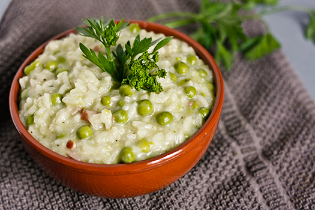

Food & Drink
Sarde in saor
Sarde in saor (sardèe in saór) are an appetizer based on fried sardines, seasoned with sweet and sour onions, pine nuts and raisins, typical of Venetian cuisine.They are often served as snacks in Venetian bacari.Bigoli in salsa
Bigoli in salsa is a Venetian pasta dish made with whole-wheat bigoli pasta, onion and salt-cured fish. While today usually anchovy is used, in earlier days it was often prepared with sardines. It is considered one of the signature dishes of Venice.
Baccala mantecato
Baccalà mantecato (Also spelled bacalà mantecato) (meaning "whipped salt cod spread" or "creamed cod") is a Venetian appetizer of whipped salt cod.The recipe uses stockfish, with salt cod being the most common. The simplest version of the recipe consists of the cod, garlic, olive oil, and salt and pepper. The fish is poached in water or milk with garlic. After poaching, it is deboned, if necessary. The fish is then broken up in a bowl and whipped, with olive oil, into a fluffy texture similar to mousse. Lidia Bastianich adds potato to the fish during the whipping process.
Risi e bisi
Risi e bisi is neither risotto nor a soup! This peas and rice dish from Veneto is easy to make but as with making a risotto, it requires your constant watch so it may be worth making a few extra portions. Risi e bisi is great for when you want to stay light, and comes together with very few ingredients.


Aperol Spritz
The original Spritz Veneziano is made with Select, which is a traditional spirit born in Venice in 1920; "Spritz al Campari" and "Aperol Spritz" are popular versions of the Italian wine-based cocktail, each one using a different bitters (namely Campari and Aperol).bellini
A Bellini is a cocktail made with Prosecco and peach purée or nectar. It originated in Venice, Italy.The Bellini was invented sometime between 1934 and 1948 by Giuseppe Cipriani, founder of Harry's Bar in Venice, Italy. He named the drink the Bellini because its unique pink color reminded him of the toga of a saint in a painting by 15th-century Venetian artist Giovanni Bellini.